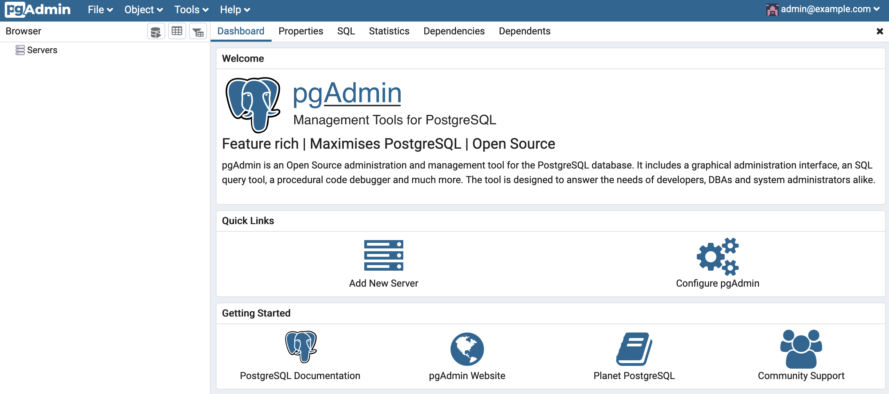

<!DOCTYPE html>
<html>
<head>
	<meta charset="utf-8" />
	<meta http-equiv="X-UA-Compatible" content="IE=edge"><title>pyodbcでDockerコンテナのPostgreSQLに接続する - 頑張らないために頑張る</title><meta name="viewport" content="width=device-width, initial-scale=1">
	<meta property="og:title" content="pyodbcでDockerコンテナのPostgreSQLに接続する" />
<meta property="og:description" content="はじめに Pythonを使ってDB操作をする場合、pyodbcを利用すると思います。そこで、Dockerコンテナで立ち上がっているPostgreSQLに対して、pyodbcで接続する手順をメモします。なお、確認用としてPostgreSQLにはテスト用のデータを少しだけ格納しておきます。
ちなみに、今回のソースはこちらにあります。
環境  macOS : 10.15.4 Python : 3.7.5 pyodbc : 4.0.30 Docker : 19.0.3.8 psql : 12.2  ざっくりした手順  psqlとpyodbcをインストールする。 DockerでPostgreSQLのコンテナを起動する。 Pythonから接続してみる。  詳しい手順 各種インストール psqlをインストールする まずは、何はなくともpsqlが必要です。インストールします。
 psqlとはPostgreSQLのターミナル型フロントエンドです。 対話的に問い合わせを入力し、それをPostgreSQLに対して発行して、結果を確認することができます。
 macOSなのでHomebrewを使うのが1番早いです。
brew update brew install postgresql 次にODBCの設定ファイルを変更します。もともと（多分）何も記述されていないファイル「odbcinst.ini」に、PostgreSQL用の部分を追記します。
$ cat /usr/local/etc/odbcinst.ini [PostgreSQL] Driver=/usr/local/lib/psqlodbcw.so  追記の仕方は、下記のようにヒアドキュメントを使うのが多分早いです。
cat &lt;&lt;EOF &gt;&gt; /usr/local/etc/odbcinst.ini heredoc else&gt; [PostgreSQL] heredoc else&gt; Driver=/usr/local/lib/psqlodbcw.so heredoc else&gt; EOF とりあえずバージョンでも見ておきます。
$ psql --version psql (PostgreSQL) 12.2 これでpsqlの準備が整いました。" />
<meta property="og:type" content="article" />
<meta property="og:url" content="https://ysko909.github.io/posts/access-to-postgresql-in-docker-container-with-python/" /><meta property="article:published_time" content="2020-04-11T09:18:31&#43;09:00"/>
<meta property="article:modified_time" content="2020-04-11T09:18:31&#43;09:00"/><meta name="twitter:card" content="summary"/>
<meta name="twitter:title" content="pyodbcでDockerコンテナのPostgreSQLに接続する"/>
<meta name="twitter:description" content="はじめに Pythonを使ってDB操作をする場合、pyodbcを利用すると思います。そこで、Dockerコンテナで立ち上がっているPostgreSQLに対して、pyodbcで接続する手順をメモします。なお、確認用としてPostgreSQLにはテスト用のデータを少しだけ格納しておきます。
ちなみに、今回のソースはこちらにあります。
環境  macOS : 10.15.4 Python : 3.7.5 pyodbc : 4.0.30 Docker : 19.0.3.8 psql : 12.2  ざっくりした手順  psqlとpyodbcをインストールする。 DockerでPostgreSQLのコンテナを起動する。 Pythonから接続してみる。  詳しい手順 各種インストール psqlをインストールする まずは、何はなくともpsqlが必要です。インストールします。
 psqlとはPostgreSQLのターミナル型フロントエンドです。 対話的に問い合わせを入力し、それをPostgreSQLに対して発行して、結果を確認することができます。
 macOSなのでHomebrewを使うのが1番早いです。
brew update brew install postgresql 次にODBCの設定ファイルを変更します。もともと（多分）何も記述されていないファイル「odbcinst.ini」に、PostgreSQL用の部分を追記します。
$ cat /usr/local/etc/odbcinst.ini [PostgreSQL] Driver=/usr/local/lib/psqlodbcw.so  追記の仕方は、下記のようにヒアドキュメントを使うのが多分早いです。
cat &lt;&lt;EOF &gt;&gt; /usr/local/etc/odbcinst.ini heredoc else&gt; [PostgreSQL] heredoc else&gt; Driver=/usr/local/lib/psqlodbcw.so heredoc else&gt; EOF とりあえずバージョンでも見ておきます。
$ psql --version psql (PostgreSQL) 12.2 これでpsqlの準備が整いました。"/>
<link href="https://fonts.googleapis.com/css?family=Ubuntu:300,400,300italic,400italic|Raleway:200,300"
		rel="stylesheet">

	<link rel="stylesheet" type="text/css" media="screen" href="https://ysko909.github.io/css/normalize.css" />
	<link rel="stylesheet" type="text/css" media="screen" href="https://ysko909.github.io/css/main.css" />
	<link rel="stylesheet" type="text/css" href="https://ysko909.github.io/css/dark.css"
		media="(prefers-color-scheme: dark)"  />
	<script src="https://cdn.jsdelivr.net/npm/feather-icons/dist/feather.min.js"></script><script src="https://ysko909.github.io/js/main.js"></script>
	<script data-ad-client="ca-pub-2615583270378842" async
		src="https://pagead2.googlesyndication.com/pagead/js/adsbygoogle.js"></script>

	<script data-ad-client="ca-pub-2615583270378842" async
		src="https://pagead2.googlesyndication.com/pagead/js/adsbygoogle.js"></script>
</head>
<body>
	<div class="container wrapper post">
		<div class="header">
	<h1 class="site-title">頑張らないために頑張る</h1>
	<div class="site-description"><h2>ゆるく頑張ります</h2><nav class="nav social">
			<ul class="flat"><a href="https://twitter.com/unknown_strings" title="Twitter"><i data-feather="twitter"></i></a><a href="https://github.com/ysko909" title="Github"><i data-feather="github"></i></a><a href="/index.xml" title="RSS"><i data-feather="rss"></i></a></ul>
		</nav>
	</div>

	<nav class="nav">
		<ul class="flat">
			
			<li>
				<a href="/">Home</a>
			</li>
			
			<li>
				<a href="/about">About</a>
			</li>
			
			<li>
				<a href="https://forms.gle/mtbEheX7qDrZfKPP8">Contact</a>
			</li>
			
			<li>
				<a href="ppolicy/">Privacy policy</a>
			</li>
			
			<li>
				<a href=""></a>
			</li>
			
		</ul>
	</nav>
</div>


		<div class="post-header">
			<h1 class="title">pyodbcでDockerコンテナのPostgreSQLに接続する</h1>
			<div class="meta">Posted at &mdash; Apr 11, 2020</div>
		</div>

		<div class="markdown">
			

<h2 id="はじめに">はじめに</h2>

<p>Pythonを使ってDB操作をする場合、<a href="https://github.com/mkleehammer/pyodbc">pyodbc</a>を利用すると思います。そこで、Dockerコンテナで立ち上がっているPostgreSQLに対して、pyodbcで接続する手順をメモします。なお、確認用としてPostgreSQLにはテスト用のデータを少しだけ格納しておきます。</p>

<p>ちなみに、今回のソースは<a href="https://github.com/ysko909/sample_pyodbc_and_postgre">こちら</a>にあります。</p>

<h2 id="環境">環境</h2>

<ul>
<li>macOS : 10.15.4</li>
<li>Python : 3.7.5</li>
<li>pyodbc : 4.0.30</li>
<li>Docker : 19.0.3.8</li>
<li>psql : 12.2</li>
</ul>

<h2 id="ざっくりした手順">ざっくりした手順</h2>

<ol>
<li>psqlとpyodbcをインストールする。</li>
<li>DockerでPostgreSQLのコンテナを起動する。</li>
<li>Pythonから接続してみる。</li>
</ol>

<h2 id="詳しい手順">詳しい手順</h2>

<h3 id="各種インストール">各種インストール</h3>

<h4 id="psqlをインストールする">psqlをインストールする</h4>

<p>まずは、何はなくとも<a href="https://www.postgresql.jp/document/9.1/html/app-psql.html">psql</a>が必要です。インストールします。</p>

<blockquote>
<p>psqlとはPostgreSQLのターミナル型フロントエンドです。 対話的に問い合わせを入力し、それをPostgreSQLに対して発行して、結果を確認することができます。</p>
</blockquote>

<p>macOSなので<a href="https://brew.sh/index_ja">Homebrew</a>を使うのが1番早いです。</p>
<div class="highlight"><pre style="background-color:#fff;-moz-tab-size:4;-o-tab-size:4;tab-size:4"><code class="language-console" data-lang="console">brew update
brew install postgresql</code></pre></div>
<p>次にODBCの設定ファイルを変更します。もともと（多分）何も記述されていないファイル「odbcinst.ini」に、PostgreSQL用の部分を追記します。</p>
<div class="highlight"><pre style="background-color:#fff;-moz-tab-size:4;-o-tab-size:4;tab-size:4"><code class="language-console" data-lang="console">$ cat  /usr/local/etc/odbcinst.ini

[PostgreSQL]  
Driver=/usr/local/lib/psqlodbcw.so  </code></pre></div>
<p>追記の仕方は、下記のようにヒアドキュメントを使うのが多分早いです。</p>
<div class="highlight"><pre style="background-color:#fff;-moz-tab-size:4;-o-tab-size:4;tab-size:4"><code class="language-console" data-lang="console">cat &lt;&lt;EOF &gt;&gt; /usr/local/etc/odbcinst.ini  
heredoc else&gt; [PostgreSQL]  
heredoc else&gt; Driver=/usr/local/lib/psqlodbcw.so  
heredoc else&gt; EOF</code></pre></div>
<p>とりあえずバージョンでも見ておきます。</p>
<div class="highlight"><pre style="background-color:#fff;-moz-tab-size:4;-o-tab-size:4;tab-size:4"><code class="language-console" data-lang="console">$ psql --version
psql (PostgreSQL) 12.2</code></pre></div>
<p>これでpsqlの準備が整いました。</p>

<h2 id="pyodbcのインストール">pyodbcのインストール</h2>

<p>pyodbcは毎度おなじみ<code>pip</code>でインストールします。</p>
<div class="highlight"><pre style="background-color:#fff;-moz-tab-size:4;-o-tab-size:4;tab-size:4"><code class="language-console" data-lang="console">pip install pyodbc</code></pre></div>
<p>基本的には、放っておけばいい感じにインストールしてくれるはずです。</p>

<h2 id="postgresqlのdockerコンテナを準備する">PostgreSQLのDockerコンテナを準備する</h2>

<p>DockerでPostgreSQLのコンテナを立ち上げます。まず準備するのは下記のファイルたちです。</p>

<ul>
<li>PostgreSQLのイメージ・・・これはDockerHubにて<a href="https://teratail.com/questions/101459">公開されているものを使います</a>。なお、内容は後で記述しますが<a href="https://www.pgadmin.org/">pgadmin4</a>のコンテナもついでに利用します。</li>
<li>テスト用テーブルを生成するSQLファイル・・・このファイル自体はなくても問題はありません。だけど、結局どこかのタイミングでテスト用テーブルを作成しないことにはテストできないので、もう簡単な<code>create</code>文の記述されたファイルを用意してテーブル作っちゃえ、という発想で準備します。</li>
<li>テスト用データを格納するSQLファイル・・・テーブルと同様で、結局どこかのタイミングでデータも作らなきゃいけないのだから、簡単な<code>insert</code>文の記述されたファイル用意してデータ作っちゃえ、という発想で準備します。</li>
</ul>

<p>それぞれのファイルは、下記のようなフォルダ体系で保存しています。公式DockerHubのPostgreSQLを使う場合、コンテナを立ち上げる際<code>/docker-entrypoint-initdb.d</code>の下にSQLファイルなどのスクリプトが存在しているなら、それらを実行します。なので、下記のフォルダを<code>volumes</code>で指定しています。なお、実行の順番は、ファイル名でソートした順番です。そのため、ファイルの頭に数字をつけて明示的に実行順序を指定しています。</p>
<div class="highlight"><pre style="background-color:#fff;-moz-tab-size:4;-o-tab-size:4;tab-size:4"><code class="language-console" data-lang="console">├── docker-compose.yml
└── postgres
    └── initdb
        ├── 1_create_tables.sql
        └── 2_insert_seed.sql</code></pre></div>
<p>まずは<code>docker-compose.yml</code>から。</p>
<div class="highlight"><pre style="background-color:#fff;-moz-tab-size:4;-o-tab-size:4;tab-size:4"><code class="language-yml" data-lang="yml">version: <span style="color:#a31515">&#39;3&#39;</span>

services:
    postgres:
        image: postgres:alpine
        restart: always
        environment:
            TZ: <span style="color:#a31515">&#34;Asia/Tokyo&#34;</span>
            POSTGRES_USER: test
            POSTGRES_PASSWORD: test
            POSTGRES_DB: test_db
        ports:
            - 5432:5432
        volumes:
            - postgres:/var/lib/postgresql/data
            - ./postgres/initdb:/docker-entrypoint-initdb.d

    pgadmin:
        image: dpage/pgadmin4:latest
        restart: always
        ports:
            - 8080:80
        environment:
            PGADMIN_DEFAULT_EMAIL: admin@example.com
            PGADMIN_DEFAULT_PASSWORD: admin
        volumes:
            - pgadmin:/var/lib/pgadmin
        depends_on:
            - postgres

volumes:
    postgres:
    pgadmin:</code></pre></div>
<p>次にSQLのソース。まずはテーブルを<code>create</code>するSQL文。</p>
<div class="highlight"><pre style="background-color:#fff;-moz-tab-size:4;-o-tab-size:4;tab-size:4"><code class="language-sql" data-lang="sql"><span style="color:#00f">create</span> <span style="color:#00f">table</span> users
(
    id serial <span style="color:#00f">primary</span> <span style="color:#00f">key</span>,
    username varchar(50) <span style="color:#00f">unique</span> <span style="color:#00f">not</span> <span style="color:#00f">null</span>,
    password varchar(50) <span style="color:#00f">not</span> <span style="color:#00f">null</span>,
    email varchar(255) <span style="color:#00f">unique</span> <span style="color:#00f">not</span> <span style="color:#00f">null</span>
);</code></pre></div>
<p>次にデータを<code>insert</code>するSQL文</p>
<div class="highlight"><pre style="background-color:#fff;-moz-tab-size:4;-o-tab-size:4;tab-size:4"><code class="language-sql" data-lang="sql"><span style="color:#00f">insert</span> <span style="color:#00f">into</span> users (username, password, email) <span style="color:#00f">values</span> (<span style="color:#a31515">&#39;keid&#39;</span>, <span style="color:#a31515">&#39;keidpass&#39;</span>, <span style="color:#a31515">&#39;keid@developer.com&#39;</span>);
<span style="color:#00f">insert</span> <span style="color:#00f">into</span> users (username, password, email) <span style="color:#00f">values</span> (<span style="color:#a31515">&#39;jobs&#39;</span>, <span style="color:#a31515">&#39;jobspass&#39;</span>, <span style="color:#a31515">&#39;jobs@developer.com&#39;</span>);
<span style="color:#00f">insert</span> <span style="color:#00f">into</span> users (username, password, email) <span style="color:#00f">values</span> (<span style="color:#a31515">&#39;mask&#39;</span>, <span style="color:#a31515">&#39;maskpass&#39;</span>, <span style="color:#a31515">&#39;mask@developer.com&#39;</span>);</code></pre></div>
<p>ぶっちゃけ、この2つのSQLはテスト用のデータでしかないので、別にデータを準備できるのであれば必要ありません。</p>

<p>ちなみに<code>/docker-entrypoint-initdb.d</code>配下のスクリプトは、<strong>既存のDBに対して実行することはできません</strong>。</p>

<p>これらのファイルが準備できたら、あとは<code>docker-compose</code>するだけです。</p>
<div class="highlight"><pre style="background-color:#fff;-moz-tab-size:4;-o-tab-size:4;tab-size:4"><code class="language-console" data-lang="console">docker-compose build
docker-compose up -d</code></pre></div>
<p><code>docker-compose ps</code>で確認してみます。</p>
<div class="highlight"><pre style="background-color:#fff;-moz-tab-size:4;-o-tab-size:4;tab-size:4"><code class="language-console" data-lang="console">docker-compose ps
        Name                   Command           State            Ports
--------------------------------------------------------------------------------
sample_db_pgadmin_1    /entrypoint.sh            Up      443/tcp,
                                                         0.0.0.0:8080-&gt;80/tcp
sample_db_postgres_1   docker-entrypoint.sh      Up      0.0.0.0:5432-&gt;5432/tcp
                       postgres</code></pre></div>
<p>確認できたら、ブラウザで<code>localhost:8080</code>にアクセスしてみます。</p>

<p></p>

<p>さっき、<code>docker-compose.yml</code>に指定したメールアドレスとパスワードを利用してログインします。</p>

<p></p>

<p>pgAdminのページにアクセスできたらOKです。</p>

<p>念の為、<code>psql</code>でもアクセスしてみます。</p>
<div class="highlight"><pre style="background-color:#fff;-moz-tab-size:4;-o-tab-size:4;tab-size:4"><code class="language-console" data-lang="console">$ psql -h 0.0.0.0 -p 5432 -d test_db -U test
Password for user test:
psql (12.2)
Type &#34;help&#34; for help.

test_db=# select * from users;
 id | username | password |       email
----+----------+----------+--------------------
  1 | keid     | keidpass | keid@developer.com
  2 | jobs     | jobspass | jobs@developer.com
  3 | mask     | maskpass | mask@developer.com
(3 rows)

test_db=# \q</code></pre></div>
<p>接続自体も問題なさげです。</p>

<h2 id="pythonから接続してみる">Pythonから接続してみる</h2>

<p>やっとこさ、pyodbcを使ってPythonから接続してみます。ソースはざっくり下記のように記述しました。</p>
<div class="highlight"><pre style="background-color:#fff;-moz-tab-size:4;-o-tab-size:4;tab-size:4"><code class="language-python" data-lang="python"><span style="color:#00f">import</span> pyodbc


<span style="color:#00f">def</span> login(server, db, uid, pw):
    s = <span style="color:#a31515">&#39;DRIVER={PostgreSQL};SERVER=&#39;</span> + server\
        + <span style="color:#a31515">&#39;;DATABASE=&#39;</span> + db\
        + <span style="color:#a31515">&#39;;UID=&#39;</span> + uid\
        + <span style="color:#a31515">&#39;;PWD=&#39;</span> + pw

    <span style="color:#00f">return</span> pyodbc.connect(s)


<span style="color:#00f">def</span> sql_execute(cnn, sql):
    cursor = cnn.cursor()
    cursor.execute(sql)
    rows = cursor.fetchall()
    cursor.close()

    <span style="color:#00f">return</span> rows


cnn = login(<span style="color:#a31515">&#39;localhost&#39;</span>, <span style="color:#a31515">&#39;test_db&#39;</span>, <span style="color:#a31515">&#39;test&#39;</span>, <span style="color:#a31515">&#39;test&#39;</span>)

sql = <span style="color:#a31515">&#39;&#39;&#39;select * from users&#39;&#39;&#39;</span>

res = sql_execute(cnn, sql)

<span style="color:#00f">if</span> res != []:
    <span style="color:#00f">for</span> l <span style="color:#00f">in</span> res:
        <span style="color:#00f">print</span>(l)</code></pre></div>
<p>pyodbcを利用して、<code>select</code>文を実行するだけの簡単なソースです。これの実行するとこんな結果が返ってくるはず。</p>
<div class="highlight"><pre style="background-color:#fff;-moz-tab-size:4;-o-tab-size:4;tab-size:4"><code class="language-console" data-lang="console">(1, &#39;keid&#39;, &#39;keidpass&#39;, &#39;keid@developer.com&#39;)
(2, &#39;jobs&#39;, &#39;jobspass&#39;, &#39;jobs@developer.com&#39;)
(3, &#39;mask&#39;, &#39;maskpass&#39;, &#39;mask@developer.com&#39;)</code></pre></div>
<p>これでPythonからのアクセスも確認できました。</p>

<h2 id="まとめ">まとめ</h2>

<p>pyodbcを使った、DockerコンテナのPostgreSQLへ向けた接続をやってみました。ちなみに、MySQLなどPostgreSQL以外のDBに対しても、基本的に手順は一緒です。その際のPython側は、接続時の<code>DRIVER</code>設定を変えればいいだけなので、接続部分のソースの使い回しがそこそこできるかな？</p>

<p>簡単にDBのテスト環境を用意したいというケースに限りませんが、Dockerのようなコンテナは本当に便利ですね。</p>

<h2 id="参考">参考</h2>

<p><a href="https://casualdevelopers.com/tech-tips/how-to-set-up-docker-compose-for-mysql-postgres-mongodb/">開発用データベースのためのDocker Composeの設定方法</a></p>

<p><a href="https://crudzoo.com/blog/docker-postgres">Docker で作る postgres 環境</a></p>

<p><a href="https://daichan.club/container/78908">postgresをDockerで動かすベストプラクティス</a></p>

		</div><div id="disqus_thread"></div>
<script type="text/javascript">
	(function () {
		
		
		if (window.location.hostname == "localhost")
			return;

		var dsq = document.createElement('script'); dsq.type = 'text/javascript'; dsq.async = true;
		var disqus_shortname = 'come-as-you-are';
		dsq.src = '//' + disqus_shortname + '.disqus.com/embed.js';
		(document.getElementsByTagName('head')[0] || document.getElementsByTagName('body')[0]).appendChild(dsq);
	})();
</script>
<noscript>Please enable JavaScript to view the <a href="http://disqus.com/?ref_noscript">comments powered by
		Disqus.</a></noscript>
<a href="http://disqus.com/" class="dsq-brlink">comments powered by <span class="logo-disqus">Disqus</span></a>
</div>
	<div class="footer wrapper">
	<nav class="nav">
		<div> © Copyright ysko |  <a href="https://github.com/vividvilla/ezhil">Ezhil theme</a> | Built with <a href="https://gohugo.io">Hugo</a></div>
	</nav>
</div>


<script type="application/javascript">
var doNotTrack = false;
if (!doNotTrack) {
	window.ga=window.ga||function(){(ga.q=ga.q||[]).push(arguments)};ga.l=+new Date;
	ga('create', 'UA-140331728-1', 'auto');
	
	ga('send', 'pageview');
}
</script>
<script async src='https://www.google-analytics.com/analytics.js'></script>
<script>feather.replace()</script>
</body>
</html>
